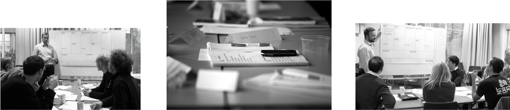

Iterate
En bedpres med disse flotte menneskene:

Osmund

Ivar

Lars
Obligatorisk "boring part"
~1 min ... lover
Hvem er vi?
- Konsulentselskap med kontorer i Oslo
Hva driver vi med?
- Utvikling
- Prosjektledelse
- Rådgivning
- Forretningsutvikling
Kunder

med flere

- Tredjeplass (2010)
- Andreplasser (2011, 2013)
- Førsteplass (2012)
Ny i Iterate
Hvorfor Iterate?
- Fokus på læring og utvikling - personlig og faglig
- Varierte prosjekt - får prøve mye forskjellig
- Gøy!
- Mål: være det beste arbeidsstedet for IT-folk (++)
Camp Iterate
We're on a boat!
Kaptein, styrmann og dekksgutt
Husk proviant!
Klær > vær
Iterate-konferansen
Iterate-konferansen
- Halvårlig konferanse av og for Iterate
- Faglig innhold
- Foredrag, lyntaler, workshops
- Lær av (og lær bort til) kollegene dine
- Sosiale aktiviteter, fest og moro
Engasjerte kollegaer
- Aktivt fagmiljø
- Ingen kan alt, men alle kan noe (du også)
- Fagkvelder, workshops og hackathons

Leke, lære, lage

Leke (med robotlego)!
Lære (med Kent Beck!)

Lage - spar strøm, programmér sammen!
Mentorer
Anders

"Everything is moving as I have foreseen"
Konsulentlivet 101
Lean Software Development
Pål

"De e vigti å vær slapp"
Web- & Backend-utvikling
Programming like a boss
Susanne

"Welcome to Apple, bitch!"
Prototyping av iOS-apps
"Everything is moving as I have foreseen"
Konsulentlivet 101
Lean Software Development
"De e vigti å vær slapp"
Web- & Backend-utvikling
Programming like a boss
"Welcome to Apple, bitch!"
Prototyping av iOS-apps
Comoyo
Link fra Hafslund

Forretningsutvikling

Test Driven Development (TDD)
- Viktig metodikk i Iterate
- Utviklet av Kent Beck
- Forebygge feil
- Raskere feedback
- Vit at koden din fungerer
- Sov bedre om natta
- Forstå problemstillingene bedre
Kent Beck
- Chief Scientist i Iterate
- Utviklet TDD og JUnit
- Skrevet flere bøker om bl.a. parprogrammering og TDD
- Har jobbet i bl.a. Apple og Facebook